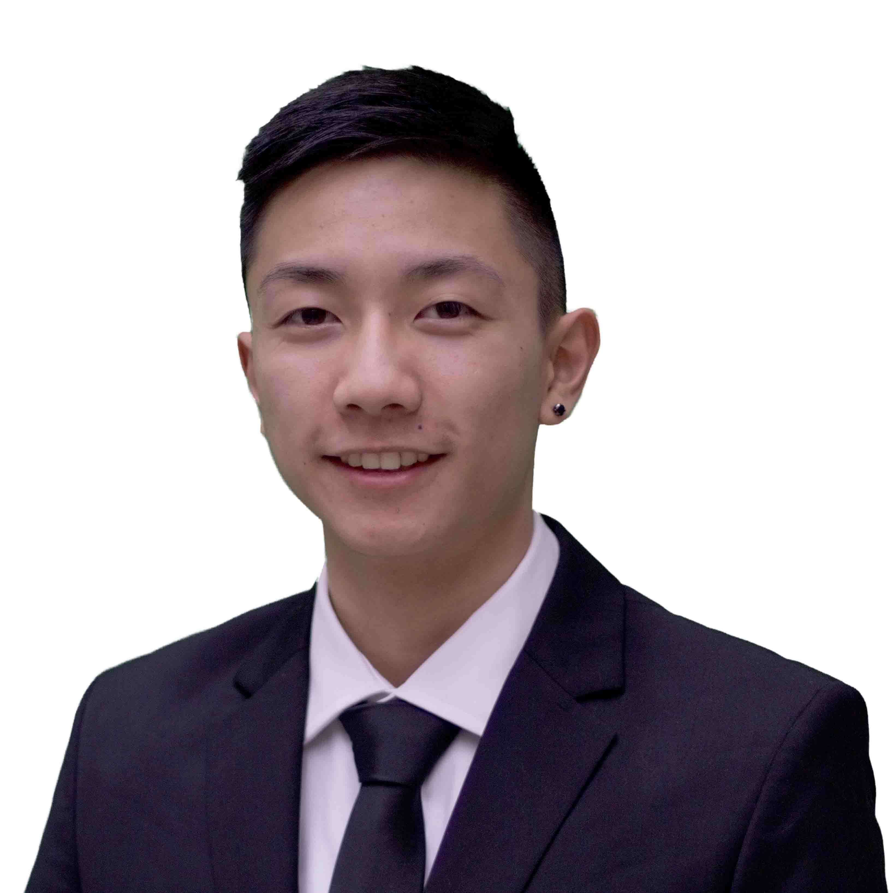

SOLON YIU
CONTACT: shyiu@ucdavis.edu
CLASS: Alpha Phi
YEAR: Junior
MAJOR(S): Mechanical Engineering
MINOR(S): Technology Management
HOMETOWN: San Ramon, CA
FRATERNAL POSITION(S) HELD: Historian
OTHER INVOLVEMENT(S): Mga Kapatid
WORK EXPERIENCE(S): Yang Fan
BIOGRAPHY: lalala